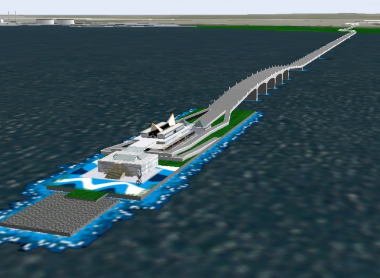
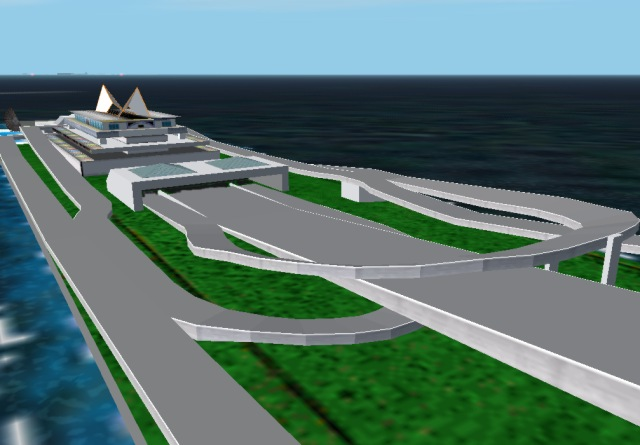

Tokyo Wan Aqua-Line old edition
The limit of hidden surface removal processing... from the various topics of my scenery design

The above picture is Aqua-line of the work before FS2000. The ramp is unnatural. When add-on scenery was made for before FS98, the hidden surface removal processing of 3D object was indispensable. When the object is complex, the hidden surface removal processing forces a serious labor on the add-on designer. As the work for which hidden surface removal processing was necessary, this work was a limit for me.
From FS2000, since the drawing engine supported z-buffe r , creation of the 3D object became easier. Then, I thought I wished to reproduce as correctly as possible the ramp of the Umihotaru I have given up until now. However, the version of FS has become new while thinking so.
I was able to get the opportunity for renewing this work at a certain time.
